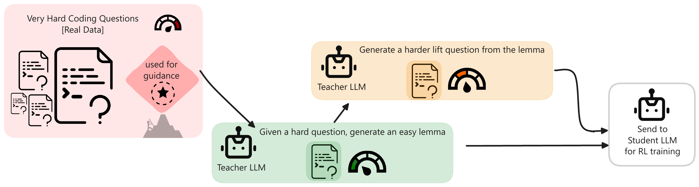
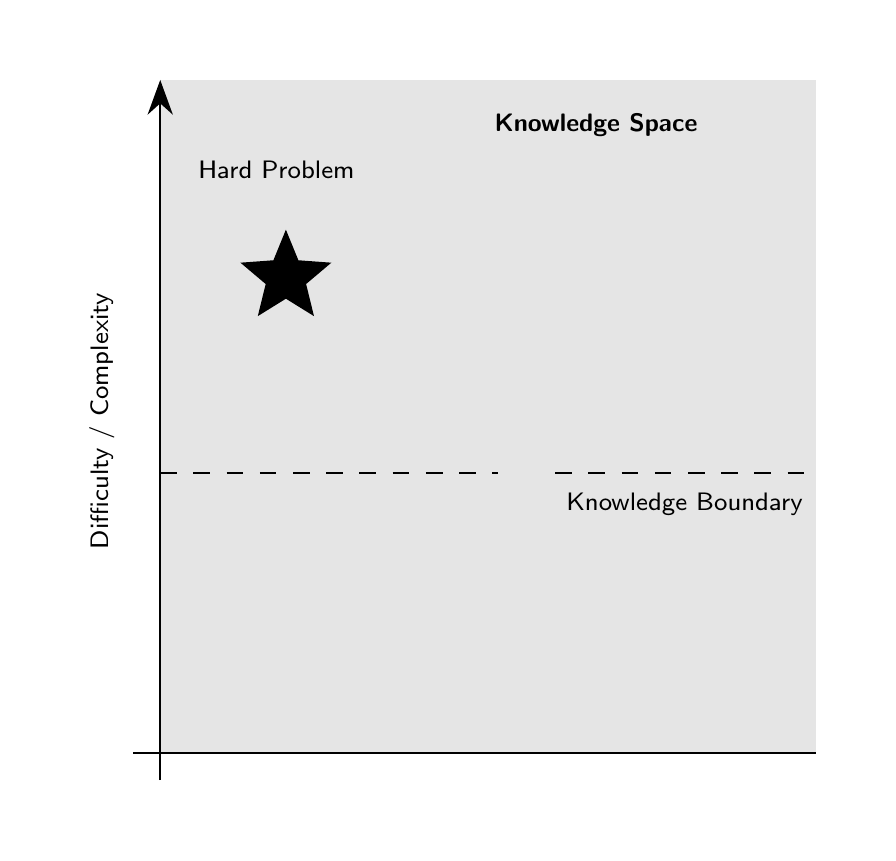
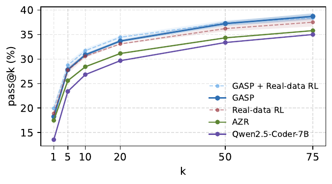

*Equal contribution
GASP introduces a guided self-play framework where a teacher model generates curriculum aligned with hard real-world coding problems (goalposts). Instead of random task generation, the system progressively constructs easier (lemma) problems from the original hard goalposts and then subsequently harder (lift) problems from the lemma to bridge the gap to these goals.

Hard real-data problems anchor the learning process and define meaningful targets for exploration.
The teacher produces easier variants that are solvable but non-trivial.
Harder variants are generated from lemmas, forming a curriculum that gradually increases difficulty.

GASP improves performance on LCBv5, with gains most notably observed at higher k. It enables solving 11 unique questions across 3 seeds that were previously unsolved by unguided self-play as well as real-data RL baselines.

Pass@k performance on LCBv5
Read the full paper here: 📄 Link to paper
@article{jana2026gasp,
title={GASP: Guided Asymmetric Self-Play For Coding LLMs},
author={Jana, Swadesh and Sancaktar, Cansu and Dani{\v{s}}, Tom{\'a}{\v{s}} and Martius, Georg and Orvieto, Antonio and Kolev, Pavel},
journal={arXiv preprint arXiv:2603.15957},
year={2026}
}